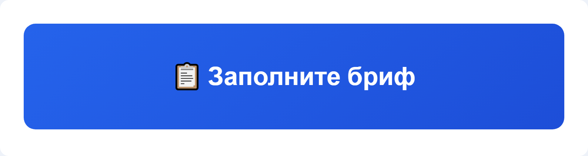
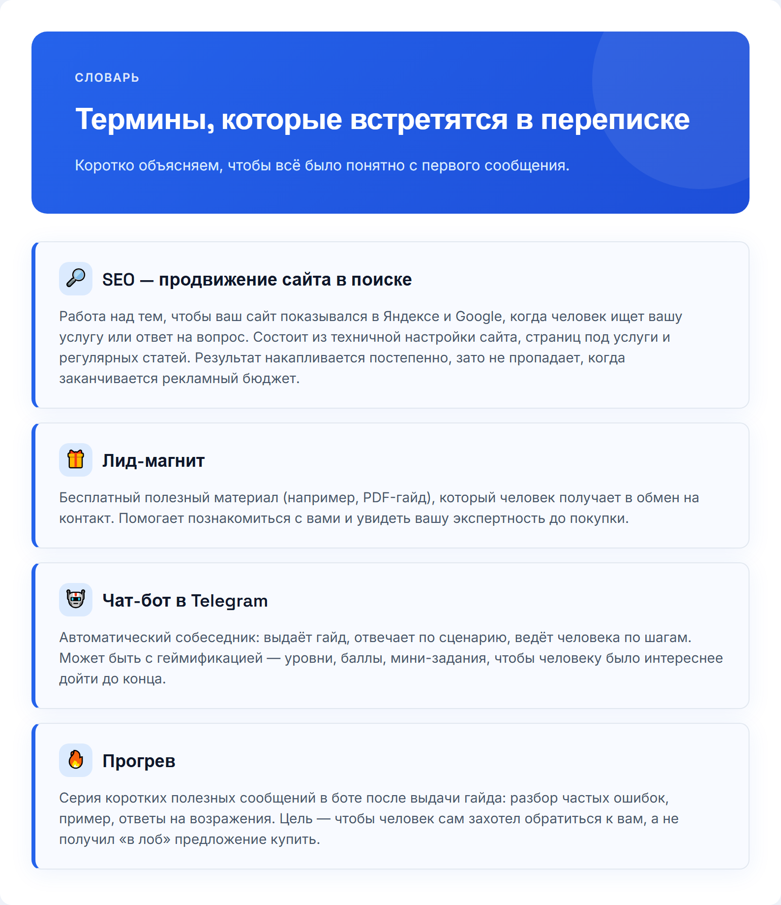
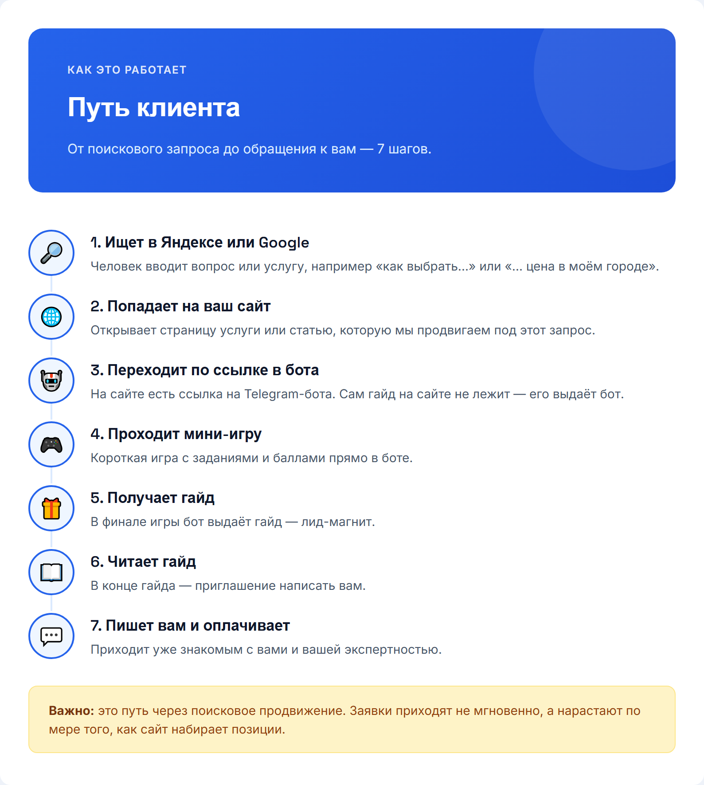
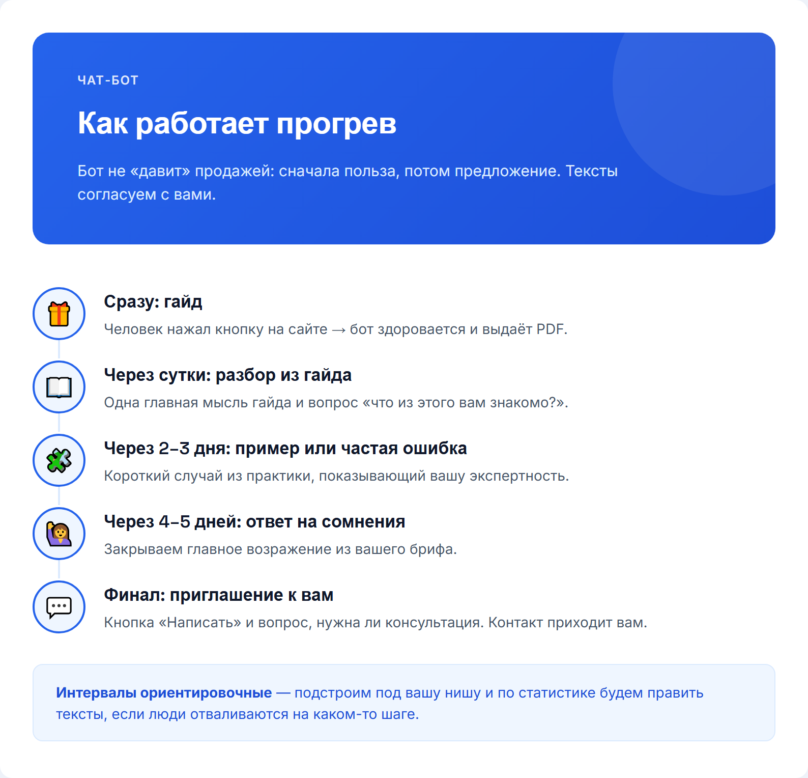
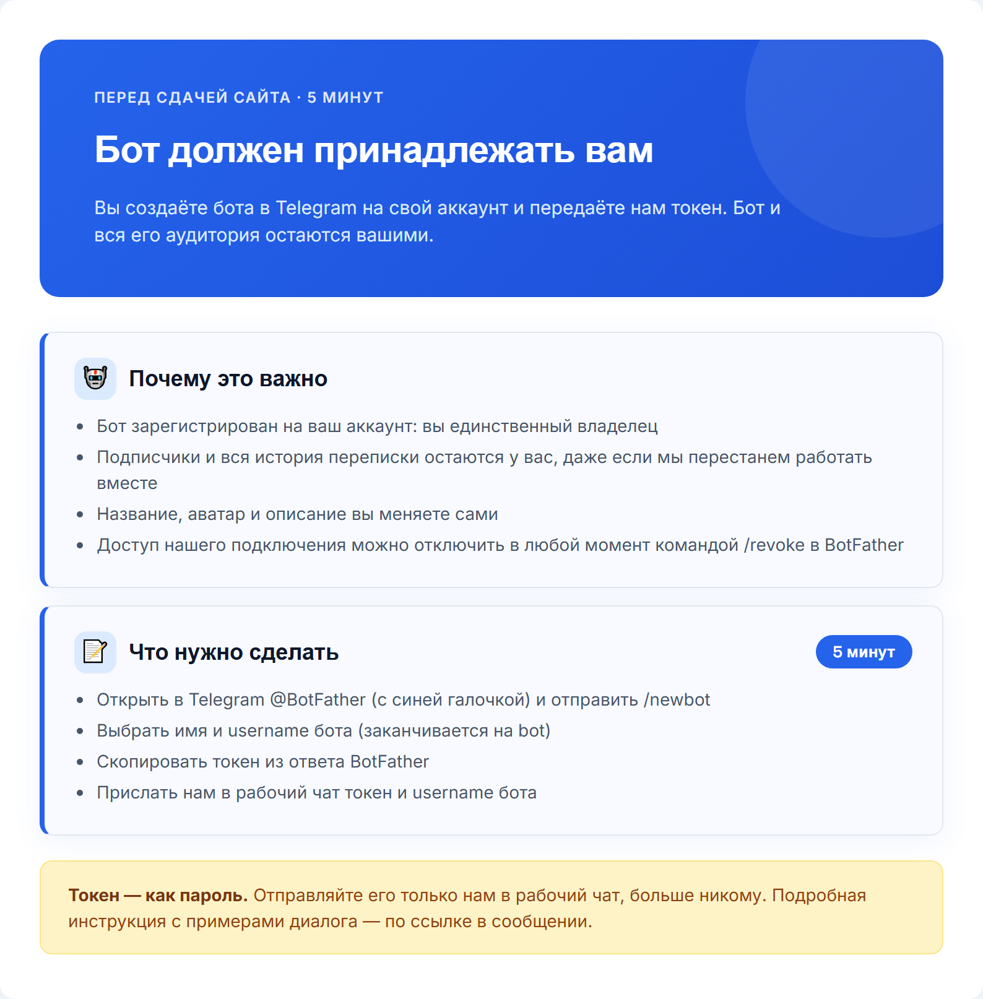
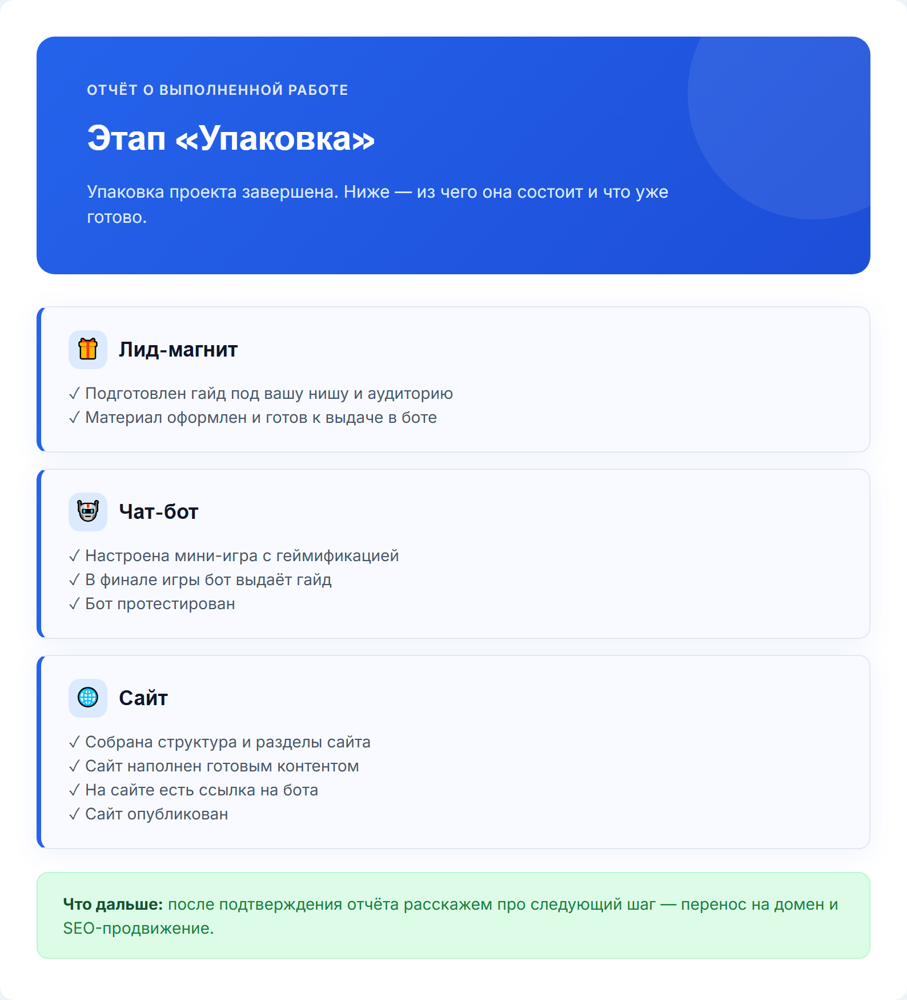
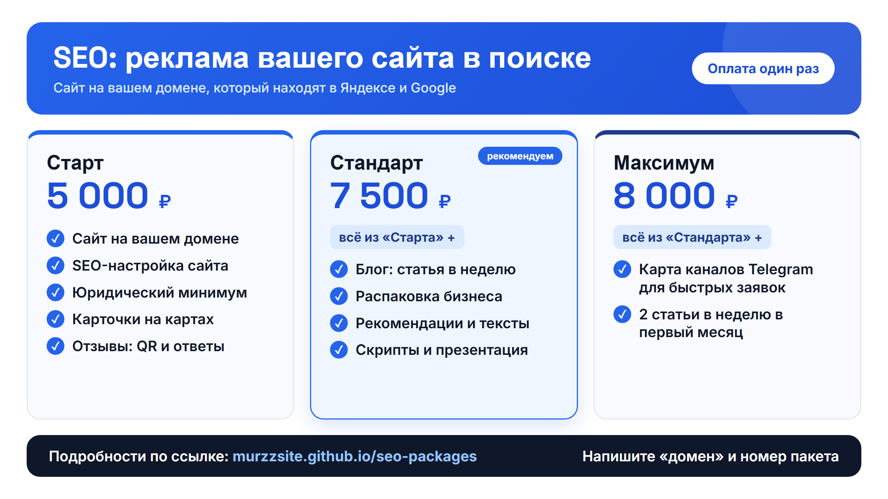
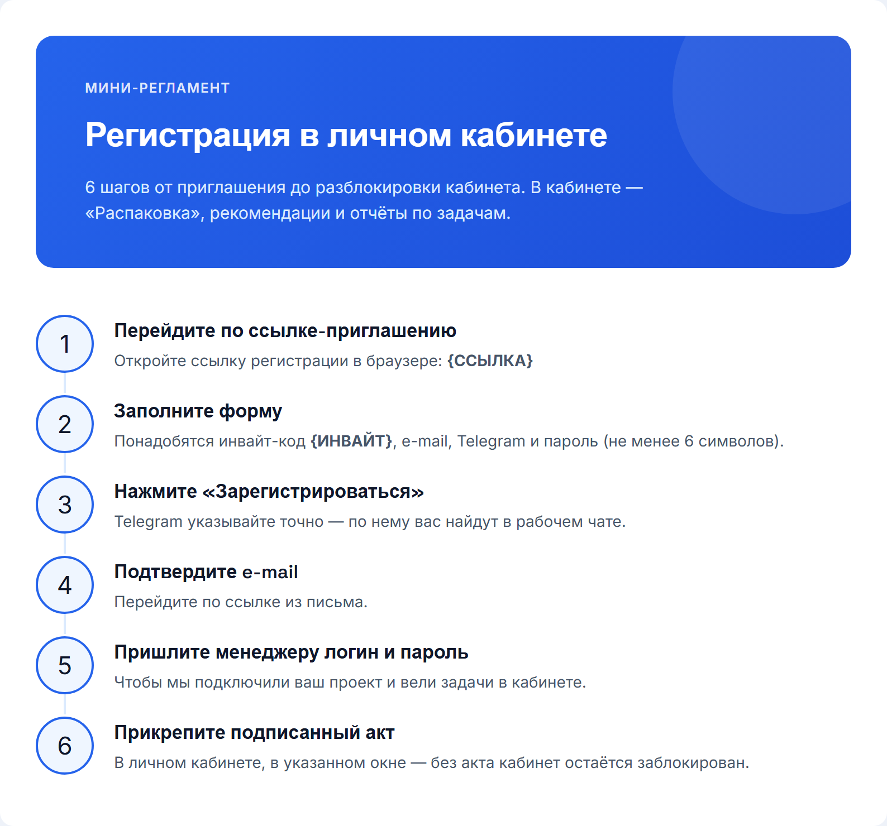
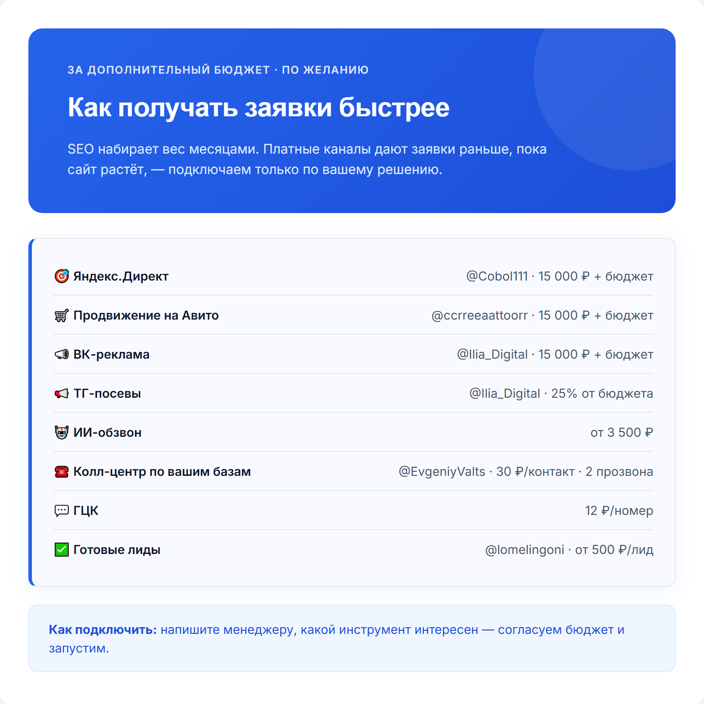

Три пакета: Старт 5 000 ₽, Стандарт 7 500 ₽, Максимум 8 000 ₽ СтартСтандартМаксимум Страница для клиента: https://murzzsite.github.io/seo-packages/
Отдельно: план продвижения бота и гайда →
Нажмите на строку, откроются сообщение, картинка и кнопка «Скопировать текст». С телефона: зажмите картинку → «Сохранить в Фото». С компьютера: правая кнопка или «Скачать файл».Это рабочий чат — здесь будем вести ваш проект от сегодняшнего дня до поставленных задач. Рады, что вы с нами 🙏

Скачать файлОтветьте на вопросы ниже — это нужно для точных целевых заявок. Нет ответа или не уверены — просто пропускайте. Можно голосовым. 🏢 О БИЗНЕСЕ 1. Сфера/ниша (напр.: психолог, брокер по новостройкам) 2. Конкретное предложение — что продаёте (напр.: «Продвижение Instagram») 3. Город(а) работы 4. Тип клиента: B2B / B2C / B2G 📊 ПОКАЗАТЕЛИ 5. Сколько клиентов сейчас в месяц (напр.: 5) 6. Желаемая выручка в месяц (напр.: 700 000 ₽) 7. Клиентский цикл (разовая покупка / подписка / долгий проект) 💰 УСЛУГИ И ЦЕНЫ 8. Список услуг с ценами, нумеруйте 8.1, 8.2... Напр.: 8.1 Курс — от 999 ₽, 8.2 Сессия 1.5ч — 7 500 ₽ 👤 АУДИТОРИЯ 9. Портрет идеального клиента (напр.: «Женщины 25-35, Москва») 10. Главная боль аудитории (напр.: «Нет заявок с сайта») 11. Ключевое возражение (напр.: «Дорого») 12. Измеримый результат (напр.: «+40% заявок») 13. УТП (напр.: «Первый месяц бесплатно») 🔗 Ссылки: ВК, ТГ, Instagram, бот, сайт, YouTube/Рутуб

Скачать файлПара терминов, которые будут встречаться в переписке — коротко объясняем:

Скачать файлВот как человек проходит путь от поиска в Яндексе до обращения к вам. Важно: это путь через поисковое продвижение. Заявки приходят не мгновенно, а нарастают по мере того, как сайт набирает позиции.

Скачать файлТак будет работать бот: человек приходит по ссылке с сайта, проходит мини-игру, а в финале получает гайд. Задания и тексты согласуем с вами.

Скачать файлПеред тем как передать вам сайт, нужно перенести бота на ваш аккаунт. Сейчас бот создан в нашей системе. Правильно, чтобы он принадлежал вам: тогда бот, его аудитория и вся история переписки остаются у вас, даже если мы однажды перестанем работать вместе. Название, аватар и описание вы сможете менять сами. Что нужно сделать (5 минут): 1. Откройте в Telegram @BotFather (с синей галочкой) и отправьте команду /newbot 2. Выберите имя бота и username латиницей, он должен заканчиваться на bot 3. Скопируйте токен, который пришлёт BotFather 4. Отправьте нам сюда в чат токен и username бота Пошаговая инструкция с примерами диалога: https://murzzsite.github.io/bot-token-guide/ ❗ Токен — как пароль от бота. Отправляйте его только нам в этот рабочий чат, не публикуйте нигде и никому больше не показывайте. Когда пришлёте токен, мы подключим бота и сразу отправим вам готовый сайт.
Здравствуйте! @{НИК_КЛИЕНТА}
Посадочная страница/сайт: {ССЫЛКА_НА_САЙТ}
Заявки с сайта приходят в Telegram-бот — активируйте его по ссылке: {DEEP_LINK_БОТА}
❗ Правки вносятся ТОЛЬКО один раз — соберите все в одно текстовое сообщение (скриншоты и голосовые не принимаются техспециалистом), если потребуется что-то поправить.
❗ Если нужно добавить фото — присылайте ТОЛЬКО ссылкой на Яндекс.Диск с открытым доступом («доступно всем, у кого есть ссылка»), мы извлечём фото оттуда. По-другому техспециалист и программа файлы не принимают.
❗ Когда напишете все правки, ОБЯЗАТЕЛЬНО добавьте фразу "это всё" — так мы поймём, что можно брать в работу.
Также нужно уточнить пару моментов:
{УТОЧНЕНИЕ_1}
{УТОЧНЕНИЕ_2}
Скачать файлГотов этап «Упаковка» — все материалы созданы. Пожалуйста, посмотрите отчёт и напишите: «Принимаю» — если всё устраивает, переходим к следующему этапу

Скачать файлЗдравствуйте! Пора сделать так, чтобы вас находили сами. Предлагаем следующий шаг: перенос сайта на ваш домен и SEO. SEO — это реклама вашего сайта в поиске. Мы настраиваем сайт так, чтобы его находили в Яндексе и Google, когда ищут ваши услуги. Вы платите один раз, а работа копится: каждая статья и страница остаются на сайте и продолжают приводить людей. Сайт на вашем домене — ваш собственный актив, без зависимости от одной площадки и VPN. Три пакета: «Старт» 5 000 ₽, «Стандарт» 7 500 ₽, «Максимум» 8 000 ₽. Оплата один раз, без абонентской платы. Состав на картинке, подробности со сроками и инструкциями: https://murzzsite.github.io/seo-packages/ Нужны заявки уже сейчас? В «Максимуме» есть карта каналов для посевов в Telegram: подбираем и проверяем каналы вашей аудитории, чтобы не платить за накрученные. Размещения оплачиваете отдельно. Результаты в поиске обычно появляются через 2–4 месяца, первые изменения видны в первые недели: сайт на вашем домене за 1–2 дня, SEO-настройка за 3–5. Гарантировать позиции и число заявок нельзя. Домен вы покупаете сами на reg.ru, около 200 ₽ в год: так он навсегда остаётся вашим. Порядок: оплата, затем покупка домена и перенос, и только после этого передаём материалы. Подходит? Напишите слово «домен» и номер пакета (1, 2 или 3), и мы начнём.
Отлично, начинаем! Подскажите, какой пакет берёте: 1 — Старт (5 000 ₽), 2 — Стандарт (7 500 ₽), 3 — Максимум (8 000 ₽). Состав: https://murzzsite.github.io/seo-packages/ Не уверены, какой выбрать? Напишите, чем занимаетесь и чего хотите от сайта, и подскажем.
Отлично, берём «Старт» (5 000 ₽). Вы получите: сайт на вашем домене, SEO-настройку, юридический минимум, тексты для карточек на картах, QR-плакат и 10 ответов на отзывы, страницу проекта. Блог и материалы для продаж в этот пакет не входят: если захотите, можно доплатить разницу позже.
❗ ВАЖНО ПРО ДОМЕН: ПОНАДОБЯТСЯ ГОСУСЛУГИ
Домен регистрируете вы сами на reg.ru, это около 200 ₽ в год. Сделать это за вас мы не можем, потому что домен оформляется на ваши данные. Мы подключаем к нему сайт и переносим всё остальное.
По Федеральному закону от 29.12.2025 № 569-ФЗ владелец домена в зонах .ru и .рф подтверждает личность через подтверждённую учётную запись Госуслуг. Поэтому заранее подготовьте:
• аккаунт на Госуслугах (подтверждённый);
• телефон, к которому он привязан.
Пошаговую инструкцию по регистрации на reg.ru вышлем сразу после оплаты, сейчас просто будьте готовы. На этом этапе потребуется ваше участие, но это займёт несколько минут. Технический специалист будет на связи и подскажет по каждому шагу.
Оплатить пакет «Старт» (5 000 ₽, оплата разовая) можно по ссылке: {ССЫЛКА_НА_ОПЛАТУ_5000}
Вышлите чек в чат, как проведёте оплату. После этого мы отправим инструкцию, технический специалист поможет зарегистрировать домен и сам перенесёт сайт.
Порядок такой: сначала перенос на домен и SEO-настройка, и только потом отправляем материалы (тексты для карточек на картах, отзывы, страницу проекта): они лежат на вашем домене.Отлично, берём «Стандарт» (7 500 ₽). Вы получите: всё из «Старта» плюс блог (от 1 статьи в неделю со 2-й недели), углублённые Распаковку и Рекомендации (в личном кабинете), скрипты продаж, презентацию и скрипт холодных сообщений.
❗ ВАЖНО ПРО ДОМЕН: ПОНАДОБЯТСЯ ГОСУСЛУГИ
Домен регистрируете вы сами на reg.ru, это около 200 ₽ в год. Сделать это за вас мы не можем, потому что домен оформляется на ваши данные. Мы подключаем к нему сайт и переносим всё остальное.
По Федеральному закону от 29.12.2025 № 569-ФЗ владелец домена в зонах .ru и .рф подтверждает личность через подтверждённую учётную запись Госуслуг. Поэтому заранее подготовьте:
• аккаунт на Госуслугах (подтверждённый);
• телефон, к которому он привязан.
Пошаговую инструкцию по регистрации на reg.ru вышлем сразу после оплаты, сейчас просто будьте готовы. На этом этапе потребуется ваше участие, но это займёт несколько минут. Технический специалист будет на связи и подскажет по каждому шагу.
Оплатить пакет «Стандарт» (7 500 ₽, оплата разовая) можно по ссылке: {ССЫЛКА_НА_ОПЛАТУ_7500}
Вышлите чек в чат, как проведёте оплату. После этого мы отправим инструкцию, технический специалист поможет зарегистрировать домен и сам перенесёт сайт.
Порядок такой: сначала перенос на домен и SEO-настройка, и только потом отправляем материалы (скрипты, презентацию, отзывы): они лежат на вашем домене. Углублённые Распаковку и Рекомендации получите в личном кабинете на платформе: регистрация, подписанный акт, дальше ждёте.Отлично, берём «Максимум» (8 000 ₽). Вы получите: всё из «Стандарта» плюс карту каналов для посевов в Telegram и 2 статьи в неделю в первый месяц, дальше по 1. Размещения в каналах оплачиваются отдельно.
❗ ВАЖНО ПРО ДОМЕН: ПОНАДОБЯТСЯ ГОСУСЛУГИ
Домен регистрируете вы сами на reg.ru, это около 200 ₽ в год. Сделать это за вас мы не можем, потому что домен оформляется на ваши данные. Мы подключаем к нему сайт и переносим всё остальное.
По Федеральному закону от 29.12.2025 № 569-ФЗ владелец домена в зонах .ru и .рф подтверждает личность через подтверждённую учётную запись Госуслуг. Поэтому заранее подготовьте:
• аккаунт на Госуслугах (подтверждённый);
• телефон, к которому он привязан.
Пошаговую инструкцию по регистрации на reg.ru вышлем сразу после оплаты, сейчас просто будьте готовы. На этом этапе потребуется ваше участие, но это займёт несколько минут. Технический специалист будет на связи и подскажет по каждому шагу.
Оплатить пакет «Максимум» (8 000 ₽, оплата разовая) можно по ссылке: {ССЫЛКА_НА_ОПЛАТУ_8000}
Вышлите чек в чат, как проведёте оплату. После этого мы отправим инструкцию, технический специалист поможет зарегистрировать домен и сам перенесёт сайт.
Порядок такой: сначала перенос на домен и SEO-настройка, и только потом отправляем материалы (карту каналов для посевов, скрипты, презентацию, отзывы): они лежат на вашем домене. Углублённые Распаковку и Рекомендации получите в личном кабинете на платформе: регистрация, подписанный акт, дальше ждёте.Конечно, поменять пакет можно. Доплачиваете разницу: со «Старта» на «Стандарт» — 2 500 ₽, со «Стандарта» на «Максимум» — 500 ₽, со «Старта» на «Максимум» — 3 000 ₽. Напишите, какой пакет нужен, и отправим ссылку на оплату. Работы по новому пакету добавляем сразу, порядок прежний: оплата, домен, перенос, материалы.
Следующий шаг — купить домен на reg.ru. Домен оформляется на вас, это 10–15 минут. Пошаговая инструкция со всеми шагами: https://murzzsite.github.io/regru-guide/ Коротко: 1. Зайдите на reg.ru, найдите свободный адрес (лучше короткий, латиницей, зона .ru — около 200 ₽ в год). 2. Добавьте домен в корзину, лишние услуги (хостинг, почту, защиту) уберите — они не нужны. 3. Зарегистрируйтесь, заполните данные владельца, подтвердите личность через Госуслуги и оплатите. 4. Пришлите сюда в чат логин и пароль от личного кабинета reg.ru и купленный адрес — программист сам подключит к нему ваш сайт. Пароль от Госуслуг нам не нужен, не присылайте его никому. После переноса рекомендуем сменить пароль в кабинете reg.ru. Перенос занимает 1–2 рабочих дня с момента получения доступа.
Готово, сайт переехал на ваш домен:
https://{ДОМЕН}
Что сделано:
• подключено защищённое соединение, настроена переадресация со старого адреса
• формы, телефоны и бот проверены
• подключены Яндекс Вебмастер, Google Search Console и Метрика с целью «Заявка»
• на сайте политика конфиденциальности, согласие в формах и плашка cookie
• тексты для карточек на Яндекс Картах, 2ГИС и Google готовы: {ССЫЛКА_НА_ТЕКСТЫ_КАРТОЧЕК}
Ваша постоянная страница проекта:
https://{ДОМЕН}/report/
Там будут цифры и статус работ. Сейчас в цифрах прочерки: первые заходы из поиска обычно появляются через 3–6 недель, топ-10 по средним запросам через 2–4 месяца, без блога рост обычно медленнее. Гарантировать позиции и число заявок нельзя.
Про защищённое соединение: значок замка в браузере включится автоматически. Сертификат выпускает хостинг-площадка, и это происходит на её стороне, поэтому ускорить процесс мы не можем. Обычно это занимает от 15 минут до нескольких часов, в редких случаях до суток. Пока его нет, браузер может показывать пометку «Не защищено»: это временно, сайт при этом работает. Когда замок появится, мы включим принудительное шифрование и сообщим вам.
Домен обновляется по интернету постепенно, до 24 часов. Если у кого-то сайт открылся не сразу, попробуйте через пару часов, с другого устройства или в режиме инкогнито.
Материалы по проекту (QR-плакат и ответы на отзывы) пришлём следующим сообщением. Они уже будут лежать на вашем домене.Готово, сайт переехал на ваш домен:
https://{ДОМЕН}
Что сделано:
• подключено защищённое соединение, настроена переадресация со старого адреса
• формы, телефоны и бот проверены
• подключены Яндекс Вебмастер, Google Search Console и Метрика с целью «Заявка»
• на сайте политика конфиденциальности, согласие в формах и плашка cookie
• тексты для карточек на Яндекс Картах, 2ГИС и Google готовы: {ССЫЛКА_НА_ТЕКСТЫ_КАРТОЧЕК}
Ваша постоянная страница проекта:
https://{ДОМЕН}/report/
Там будут цифры и статус работ. Сейчас в цифрах прочерки: первые заходы из поиска обычно появляются через 3–6 недель, топ-10 по средним запросам через 2–4 месяца при регулярных статьях. Гарантировать позиции и число заявок нельзя.
Первая статья выйдет на 2-й неделе, дальше от 1 в неделю: бот пришлёт её вам на согласование.
Про защищённое соединение: значок замка в браузере включится автоматически. Сертификат выпускает хостинг-площадка, и это происходит на её стороне, поэтому ускорить процесс мы не можем. Обычно это занимает от 15 минут до нескольких часов, в редких случаях до суток. Пока его нет, браузер может показывать пометку «Не защищено»: это временно, сайт при этом работает. Когда замок появится, мы включим принудительное шифрование и сообщим вам.
Домен обновляется по интернету постепенно, до 24 часов. Если у кого-то сайт открылся не сразу, попробуйте через пару часов, с другого устройства или в режиме инкогнито.
Углублённые Распаковка и Рекомендации ждите в личном кабинете на платформе. Материалы по проекту (скрипты, презентация, отзывы) пришлём следующим сообщением. Они уже будут лежать на вашем домене.Готово, сайт переехал на ваш домен:
https://{ДОМЕН}
Что сделано:
• подключено защищённое соединение, настроена переадресация со старого адреса
• формы, телефоны и бот проверены
• подключены Яндекс Вебмастер, Google Search Console и Метрика с целью «Заявка»
• на сайте политика конфиденциальности, согласие в формах и плашка cookie
• тексты для карточек на Яндекс Картах, 2ГИС и Google готовы: {ССЫЛКА_НА_ТЕКСТЫ_КАРТОЧЕК}
Ваша постоянная страница проекта:
https://{ДОМЕН}/report/
Там будут цифры и статус работ. Сейчас в цифрах прочерки: первые заходы из поиска обычно появляются через 3–6 недель, топ-10 по средним запросам через 2–4 месяца при регулярных статьях. Гарантировать позиции и число заявок нельзя.
Первая статья выйдет на 2-й неделе, в первый месяц по 2 в неделю, дальше по 1: бот пришлёт её вам на согласование.
Про защищённое соединение: значок замка в браузере включится автоматически. Сертификат выпускает хостинг-площадка, и это происходит на её стороне, поэтому ускорить процесс мы не можем. Обычно это занимает от 15 минут до нескольких часов, в редких случаях до суток. Пока его нет, браузер может показывать пометку «Не защищено»: это временно, сайт при этом работает. Когда замок появится, мы включим принудительное шифрование и сообщим вам.
Домен обновляется по интернету постепенно, до 24 часов. Если у кого-то сайт открылся не сразу, попробуйте через пару часов, с другого устройства или в режиме инкогнито.
Углублённые Распаковка и Рекомендации ждите в личном кабинете на платформе. Материалы по проекту (карта каналов для посевов, скрипты, презентация, отзывы) пришлём следующим сообщением. Они уже будут лежать на вашем домене.Здравствуйте! Материалы вашего пакета готовы и лежат на вашем сайте. Страница проекта со всем в одном месте, сохраните ссылку:
https://{ДОМЕН}/report/
1. Отзывы
https://{ДОМЕН}/reviews.html
QR-плакат для печати и 10 шаблонов ответов на отзывы. Когда заведёте карточку на картах, пришлите ссылку на отзыв: поставим её в плакат.
Все страницы открываются и с телефона.
❗ Правки вносятся ТОЛЬКО один раз — одним текстовым сообщением (скриншоты и голосовые не принимаются). Если правки в файле, присылайте ТОЛЬКО ссылкой на Яндекс.Диск или Google Диск.
❗ Когда напишете все правки, ОБЯЗАТЕЛЬНО добавьте фразу «это всё».
Для документов и подвала сайта нужно от вас только: форма (ИП, самозанятость или ООО) и ИНН. Остальное у нас уже есть.Здравствуйте! Материалы вашего пакета на сайте готовы. Углублённые Распаковка и Рекомендации мы готовим в вашем личном кабинете на платформе: зарегистрируйтесь, прикрепите подписанный акт и ждите, они появятся там. Страница проекта со всем в одном месте, сохраните ссылку:
https://{ДОМЕН}/report/
1. Три дополнительных материала
https://{ДОМЕН}/materials.html
Скрипты продаж, презентация и скрипт холодных сообщений.
2. Отзывы
https://{ДОМЕН}/reviews.html
QR-плакат для печати и 10 шаблонов ответов на отзывы. Когда заведёте карточку на картах, пришлите ссылку на отзыв: поставим её в плакат.
Все страницы открываются и с телефона.
❗ Правки вносятся ТОЛЬКО один раз — одним текстовым сообщением (скриншоты и голосовые не принимаются). Если правки в файле, присылайте ТОЛЬКО ссылкой на Яндекс.Диск или Google Диск.
❗ Когда напишете все правки, ОБЯЗАТЕЛЬНО добавьте фразу «это всё».
Для документов и подвала сайта нужно от вас только: форма (ИП, самозанятость или ООО) и ИНН. Остальное у нас уже есть.Здравствуйте! Материалы вашего пакета на сайте готовы. Углублённые Распаковка и Рекомендации мы готовим в вашем личном кабинете на платформе: зарегистрируйтесь, прикрепите подписанный акт и ждите, они появятся там. Страница проекта со всем в одном месте, сохраните ссылку:
https://{ДОМЕН}/report/
1. Карта каналов для посевов в Telegram
https://{ДОМЕН}/channels.html
Каналы вашей аудитории с охватом и вовлечённостью, список «не берём», план первой волны, три рекламных поста и калькулятор стоимости 1000 просмотров. Размещения оплачиваете вы отдельно, цены называют администраторы каналов.
2. Три дополнительных материала
https://{ДОМЕН}/materials.html
Скрипты продаж, презентация и скрипт холодных сообщений.
3. Отзывы
https://{ДОМЕН}/reviews.html
QR-плакат для печати и 10 шаблонов ответов на отзывы. Когда заведёте карточку на картах, пришлите ссылку на отзыв: поставим её в плакат.
Все страницы открываются и с телефона.
❗ Правки вносятся ТОЛЬКО один раз — одним текстовым сообщением (скриншоты и голосовые не принимаются). Если правки в файле, присылайте ТОЛЬКО ссылкой на Яндекс.Диск или Google Диск.
❗ Когда напишете все правки, ОБЯЗАТЕЛЬНО добавьте фразу «это всё».
Для документов и подвала сайта нужно от вас только: форма (ИП, самозанятость или ООО) и ИНН. Остальное у нас уже есть.Здравствуйте! @{НИК_КЛИЕНТА}
Сайт переехал на ваш домен, а мы сделали пакет работ по SEO. Ниже что готово и что нужно от вас.
Ваш сайт: https://{ДОМЕН}
Страница проекта со всеми материалами, сохраните ссылку: https://{ДОМЕН}/report/
Что сделано на сайте:
• домен подключён, со старого адреса настроена переадресация
• форма заявок проверена: заявки с нового адреса приходят как обычно
• SEO-настройка: заголовки и описания, разметка, карта сайта, файл robots, четыре страницы под ваши услуги
• политика конфиденциальности, согласие в форме и плашка cookie
• готовы тексты, логотип и обложка для карточек на картах
Про защищённое соединение: значок замка в браузере включится автоматически. Сертификат выпускает хостинг-площадка, это на её стороне, и ускорить процесс мы не можем. Обычно от 15 минут до нескольких часов, в редких случаях до суток. Пока его нет, браузер при открытии ссылок может написать «Соединение не защищено» или «Подключение не защищено». Это временно и касается только шифрования, сайт тот же. Нажмите «Подробнее» (или «Дополнительно»), затем «Перейти на сайт» (в Safari на iPhone «Посетить этот веб-сайт»): так ссылки откроются. Если не хотите нажимать, замените в ссылке https на http, тогда предупреждения не будет. Когда замок появится, мы включим принудительное шифрование и сообщим вам.
Материалы лежат на вашем домене и открываются с телефона. Тексты для карточек на картах готовы, ниже отзывы:
1. Отзывы
https://{ДОМЕН}/reviews.html
QR-плакат и 10 шаблонов ответов на отзывы.
Как смотреть цифры самим: https://murzzsite.github.io/seo-packages/#stats
Когда ждать результат: первые заходы из поиска обычно появляются через 3–6 недель, топ-10 по средним запросам через 2–4 месяца, без блога рост обычно медленнее. Гарантировать позиции и число заявок нельзя.
Что нужно от вас:
1. Форма (ИП, самозанятость или ООО) и ИНН. Остальные реквизиты для политики возьмём из открытых реестров.
2. Адрес, телефон и график работы для карточек на картах. Если офиса для клиентов нет, так и напишите.
3. Подтвердить сайт в Яндекс Вебмастере и Google Search Console и создать счётчик Метрики. Это 10–15 минут, вход в аккаунты нужен только вам, пароли присылать не надо: https://murzzsite.github.io/webmaster-guide/
4. Запустить бота заявок: {DEEP_LINK_БОТА} В него приходят заявки с сайта.
5. Когда заведёте карточки, пришлите ссылку на отзыв: поставим её в плакат.
❗ Правки вносятся ТОЛЬКО один раз — одним текстовым сообщением (скриншоты и голосовые не принимаются). Если правки в файле, присылайте ТОЛЬКО ссылкой на Яндекс.Диск или Google Диск.
❗ Когда напишете все правки, ОБЯЗАТЕЛЬНО добавьте фразу «это всё».Здравствуйте! @{НИК_КЛИЕНТА}
Сайт переехал на ваш домен, а мы сделали пакет работ по SEO. Ниже что готово и что нужно от вас.
Ваш сайт: https://{ДОМЕН}
Страница проекта со всеми материалами, сохраните ссылку: https://{ДОМЕН}/report/
Что сделано на сайте:
• домен подключён, со старого адреса настроена переадресация
• форма заявок проверена: заявки с нового адреса приходят как обычно
• SEO-настройка: заголовки и описания, разметка, карта сайта, файл robots, четыре страницы под ваши услуги
• политика конфиденциальности, согласие в форме и плашка cookie
• написана первая статья блога, дальше от одной статьи в неделю
• готовы тексты, логотип и обложка для карточек на картах
Про защищённое соединение: значок замка в браузере включится автоматически. Сертификат выпускает хостинг-площадка, это на её стороне, и ускорить процесс мы не можем. Обычно от 15 минут до нескольких часов, в редких случаях до суток. Пока его нет, браузер при открытии ссылок может написать «Соединение не защищено» или «Подключение не защищено». Это временно и касается только шифрования, сайт тот же. Нажмите «Подробнее» (или «Дополнительно»), затем «Перейти на сайт» (в Safari на iPhone «Посетить этот веб-сайт»): так ссылки откроются. Если не хотите нажимать, замените в ссылке https на http, тогда предупреждения не будет. Когда замок появится, мы включим принудительное шифрование и сообщим вам.
Углублённые Распаковка и Рекомендации мы готовим в вашем личном кабинете на платформе: зарегистрируйтесь, прикрепите подписанный акт и ждите, они появятся там.
Остальные материалы лежат на вашем домене и открываются с телефона:
1. Карточки на картах
https://{ДОМЕН}/cards.html
Тексты, логотип и обложка для Яндекс Карт, 2ГИС и Google.
2. Отзывы
https://{ДОМЕН}/reviews.html
QR-плакат и 10 шаблонов ответов на отзывы.
3. Три дополнительных материала
https://{ДОМЕН}/materials.html
Скрипты продаж, презентация, холодные сообщения.
Как смотреть цифры самим: https://murzzsite.github.io/seo-packages/#stats
Когда ждать результат: первые заходы из поиска обычно появляются через 3–6 недель, топ-10 по средним запросам через 2–4 месяца при регулярных статьях. Гарантировать позиции и число заявок нельзя.
Что нужно от вас:
1. Форма (ИП, самозанятость или ООО) и ИНН. Остальные реквизиты для политики возьмём из открытых реестров.
2. Адрес, телефон и график работы для карточек на картах. Если офиса для клиентов нет, так и напишите.
3. Подтвердить сайт в Яндекс Вебмастере и Google Search Console и создать счётчик Метрики. Это 10–15 минут, вход в аккаунты нужен только вам, пароли присылать не надо: https://murzzsite.github.io/webmaster-guide/
4. Запустить бота заявок: {DEEP_LINK_БОТА} В него приходят заявки с сайта и черновики статей с кнопкой «Опубликовать».
5. Когда заведёте карточки, пришлите ссылку на отзыв: поставим её в плакат.
❗ Правки вносятся ТОЛЬКО один раз — одним текстовым сообщением (скриншоты и голосовые не принимаются). Если правки в файле, присылайте ТОЛЬКО ссылкой на Яндекс.Диск или Google Диск.
❗ Когда напишете все правки, ОБЯЗАТЕЛЬНО добавьте фразу «это всё».Здравствуйте! @{НИК_КЛИЕНТА}
Сайт переехал на ваш домен, а мы сделали пакет работ по SEO. Ниже что готово и что нужно от вас.
Ваш сайт: https://{ДОМЕН}
Страница проекта со всеми материалами, сохраните ссылку: https://{ДОМЕН}/report/
Что сделано на сайте:
• домен подключён, со старого адреса настроена переадресация
• форма заявок проверена: заявки с нового адреса приходят как обычно
• SEO-настройка: заголовки и описания, разметка, карта сайта, файл robots, четыре страницы под ваши услуги
• политика конфиденциальности, согласие в форме и плашка cookie
• написана первая статья блога, в первый месяц по 2 в неделю, дальше по 1
• готовы тексты, логотип и обложка для карточек на картах
Про защищённое соединение: значок замка в браузере включится автоматически. Сертификат выпускает хостинг-площадка, это на её стороне, и ускорить процесс мы не можем. Обычно от 15 минут до нескольких часов, в редких случаях до суток. Пока его нет, браузер при открытии ссылок может написать «Соединение не защищено» или «Подключение не защищено». Это временно и касается только шифрования, сайт тот же. Нажмите «Подробнее» (или «Дополнительно»), затем «Перейти на сайт» (в Safari на iPhone «Посетить этот веб-сайт»): так ссылки откроются. Если не хотите нажимать, замените в ссылке https на http, тогда предупреждения не будет. Когда замок появится, мы включим принудительное шифрование и сообщим вам.
Углублённые Распаковка и Рекомендации мы готовим в вашем личном кабинете на платформе: зарегистрируйтесь, прикрепите подписанный акт и ждите, они появятся там.
Остальные материалы лежат на вашем домене и открываются с телефона:
1. Карточки на картах
https://{ДОМЕН}/cards.html
Тексты, логотип и обложка для Яндекс Карт, 2ГИС и Google.
2. Отзывы
https://{ДОМЕН}/reviews.html
QR-плакат и 10 шаблонов ответов на отзывы.
3. Карта каналов для посевов в Telegram
https://{ДОМЕН}/channels.html
Критерии отбора, калькулятор, план первой волны и три рекламных поста. Список каналов с цифрами мы дозаполним сами.
4. Три дополнительных материала
https://{ДОМЕН}/materials.html
Скрипты продаж, презентация, холодные сообщения.
Как смотреть цифры самим: https://murzzsite.github.io/seo-packages/#stats
Когда ждать результат: первые заходы из поиска обычно появляются через 3–6 недель, топ-10 по средним запросам через 2–4 месяца при регулярных статьях. Гарантировать позиции и число заявок нельзя.
Что нужно от вас:
1. Форма (ИП, самозанятость или ООО) и ИНН. Остальные реквизиты для политики возьмём из открытых реестров.
2. Адрес, телефон и график работы для карточек на картах. Если офиса для клиентов нет, так и напишите.
3. Подтвердить сайт в Яндекс Вебмастере и Google Search Console и создать счётчик Метрики. Это 10–15 минут, вход в аккаунты нужен только вам, пароли присылать не надо: https://murzzsite.github.io/webmaster-guide/
4. Запустить бота заявок: {DEEP_LINK_БОТА} В него приходят заявки с сайта и черновики статей с кнопкой «Опубликовать».
5. Когда заведёте карточки, пришлите ссылку на отзыв: поставим её в плакат.
❗ Правки вносятся ТОЛЬКО один раз — одним текстовым сообщением (скриншоты и голосовые не принимаются). Если правки в файле, присылайте ТОЛЬКО ссылкой на Яндекс.Диск или Google Диск.
❗ Когда напишете все правки, ОБЯЗАТЕЛЬНО добавьте фразу «это всё».Здравствуйте! Чтобы сайт быстрее появился в поиске, нужно подтвердить его в Яндекс Вебмастере и Google Search Console и создать счётчик Метрики. Это 10–15 минут, вход в аккаунты нужен только вам, пароли присылать не надо. Пошаговая инструкция: https://murzzsite.github.io/webmaster-guide/ Пришлите нам три вещи, можно по одной: 1. строку yandex-verification из Вебмастера 2. строку google-site-verification из Search Console 3. номер счётчика Метрики Остальное сделаем мы: вставим теги, подключим счётчик и напишем вам, когда можно нажать «Проверить» и «Подтвердить».

Скачать файлСледующий шаг — личный кабинет на платформе:
1. Зарегистрируйтесь: {ССЫЛКА_НА_ПЛАТФОРМУ}
Инвайт-код: {ИНВАЙТ_КОД}
2. Подтвердите e-mail и пришлите нам логин и пароль, чтобы мы подключили проект.
3. Прикрепите в кабинете подписанный акт: без него кабинет закрыт.
В кабинете будут задачи по проекту и отчёты. Остальные материалы пришлём ссылками на вашем домене после переноса сайта.Следующий шаг — личный кабинет на платформе:
1. Зарегистрируйтесь: {ССЫЛКА_НА_ПЛАТФОРМУ}
Инвайт-код: {ИНВАЙТ_КОД}
2. Подтвердите e-mail и пришлите нам логин и пароль, чтобы мы подключили проект.
3. Прикрепите в кабинете подписанный акт: без него кабинет закрыт.
4. Дальше ждите: углублённые Распаковка и Рекомендации мы готовим прямо в кабинете, они появятся там. Как будут готовы, напишем сюда.
Остальные материалы пришлём ссылками на вашем домене после переноса сайта.Короткое видео, как работать в личном кабинете: {ССЫЛКА_НА_ПЛАТФОРМУ}
В нём: как смотреть задачи и прикладывать отчёты к выполненным.
Углублённые Распаковка и Рекомендации (пакеты «Стандарт» и «Максимум») появятся в кабинете, мы напишем, когда будут готовы. Остальные материалы лежат на вашем домене, ссылки пришлём после переноса сайта.
Вопросы пишите сюда 🙂
Скачать файлЕсли захотите получать заявки быстрее, чем набирает вес SEO, можно параллельно подключить платные каналы — это отдельный бюджет, подключаем только по вашему желанию. Список и цены — на картинке. Пишите — согласуем и запустим.
Как отрабатывать возражения про биржу, CPA и пакеты: 1. Признать один раз, одной фразой. Дальше факты и выбор, без извинений по кругу. 2. Не спорить про «что обещали»: никаких «вам этого не говорили» и «читайте договор». Идём от того, что есть сейчас. 3. Возврат не обещаем и не отказываем на словах: запрос оформляем письменно, решение принимает руководитель по договору. 4. Не говорим «150 ₽ за лид», пока нет реальных переданных лидов. 5. Не обещаем позиции и число заявок. 6. Каждый ответ заканчивается вопросом или выбором. Мост (скажите, если клиент недоволен биржей): «По вашему проекту с биржи заявок пока нет. Предлагаю ставить на канал, который принадлежит вам: сайт, который находят в Яндексе и Google. Его не отключат, и за каждую заявку платить не нужно».
Да, по вашему проекту заявок с биржи пока нет, и ждать их как основной план не стоит. Предлагаю ставить на канал, который принадлежит вам: сайт на вашем домене, который находят в Яндексе и Google. Его не отключат, и за каждую заявку платить не нужно. Результат приходит не сразу: обычно через 2–4 месяца, гарантировать число заявок нельзя. Подсказать, какой пакет подходит под ваш срок?
Понимаю, вы рассчитывали на другое. Давайте от сегодняшнего дня: что вам нужно, чтобы у проекта появились клиенты? Если срочно, скажу прямо: SEO за неделю не даст, там 2–4 месяца. Для быстрых заявок есть Telegram-посевы («Максимум»): размещения оплачиваются отдельно, результат не гарантирован. Что для вас важнее: срок или стабильность?
Фиксирую ваше обращение. Пришлите в чат одним сообщением, что и за что вы просите вернуть.
Решение по возврату принимает руководитель по условиям договора, ответим в течение {СРОК}. А пока работа по проекту может идти: сайт на домене и SEO-настройка вам пригодятся в любом случае.Бот и гайд делали как инструмент для трафика, и они остаются дополнительным каналом. Главный актив для SEO — сайт: именно его находят в поиске, поэтому мы переносим его на ваш домен и настраиваем под запросы ваших клиентов. Бот при этом принимает заявки с сайта.
Сайт сделать можно. Чтобы его находили, нужны запросы, структура страниц, разметка, подключение Вебмастера и Search Console, юридический минимум и регулярные статьи. Это и есть пакет. Пришлите, где ваш сайт сейчас в поиске, и скажу, чего именно не хватает.
Разберу ваш договор и пришлю письменный ответ в течение {СРОК}. А пока давайте решим, что делаем дальше с проектом: SEO даст вам собственный канал.Да, это реклама вашего сайта, только в поиске: мы настраиваем сайт так, чтобы он показывался в Яндексе и Google. За каждый клик вы не платите, и работа копится: статьи и страницы остаются на сайте.
Поисковикам нужно время, чтобы заметить сайт и статьи. Зато реклама работает, пока вы платите, а SEO остаётся с вами. Если нужны заявки быстрее, подойдёт «Максимум»: там карта каналов для Telegram.
Да, 2–4 месяца до заметного результата, и гарантировать позиции нельзя. Зато работа копится: каждая статья и страница остаются и продолжают приводить людей. Реклама перестаёт работать в день, когда вы перестаёте платить. Вы платите один раз.
Нет, и никто честно не гарантирует. Гарантируем работу по списку: перенос, настройка, статьи, материалы. Цифры вы видите сами в Метрике и Вебмастере.
Сначала смотрим цифры вместе: растут ли показы в Вебмастере и Search Console. Показы обычно растут раньше кликов. Если за 2–4 месяца нет и показов, разбираемся, в чём дело.
Яндекс Метрика (визиты и заявки), Яндекс Вебмастер (показы и позиции в Яндексе), Google Search Console (то же для Google). Инструкции «что и где нажимать»: https://murzzsite.github.io/seo-packages/#stats
Да, в «Стандарте» и «Максимуме» мы пишем статьи и сами публикуем их на сайте. Посты и сторис для соцсетей публикует клиент: мы готовим тексты и сценарии.
«Старт» — сайт на вашем домене и SEO-основа. «Стандарт» добавляет блог со статьями, углублённые Распаковку и Рекомендации и материалы для продаж. «Максимум» добавляет посевы в Telegram и 2 статьи в неделю в первый месяц. Состав: https://murzzsite.github.io/seo-packages/
Если нужно, чтобы сайт находили и клиенты приходили из поиска, берут «Стандарт»: там блог, который копит трафик. «Старт» подойдёт, если нужна только основа. «Максимум» нужен, если важны быстрые заявки из Telegram. Состав: https://murzzsite.github.io/seo-packages/
Разница в карте каналов и усиленном блоге. Подбор и проверка каналов занимают заметное время, поэтому это отдельная опция.
Скидку не даём. Если нужно дешевле, начните со «Старта»: потом можно доплатить разницу до «Стандарта». Оплата разовая, абонентской платы нет. Что для вас важнее: цена сейчас или блог со статьями?
Да, оплачиваете разницу. Уточните у старшего менеджера, как оформляем. Готовое сообщение: карточка /смена_пакета во вкладке «Воронка».
Это адрес сайта, например ваша-компания.ru. Он навсегда ваш и не зависит от одной площадки. Объясняем по ссылке: https://murzzsite.github.io/domain-guide/
Покупает клиент на reg.ru, около 200 ₽ в год. Так домен остаётся у него. Для зон .ru и .рф нужен подтверждённый аккаунт на Госуслугах и привязанный телефон.
Нет, порядок такой: оплата, потом домен и перенос, потом материалы.